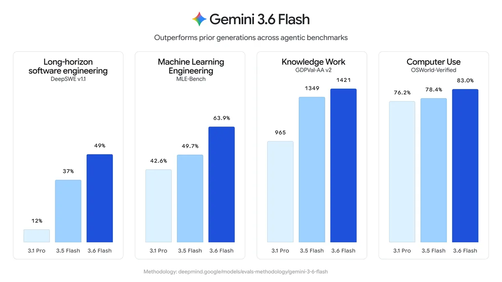
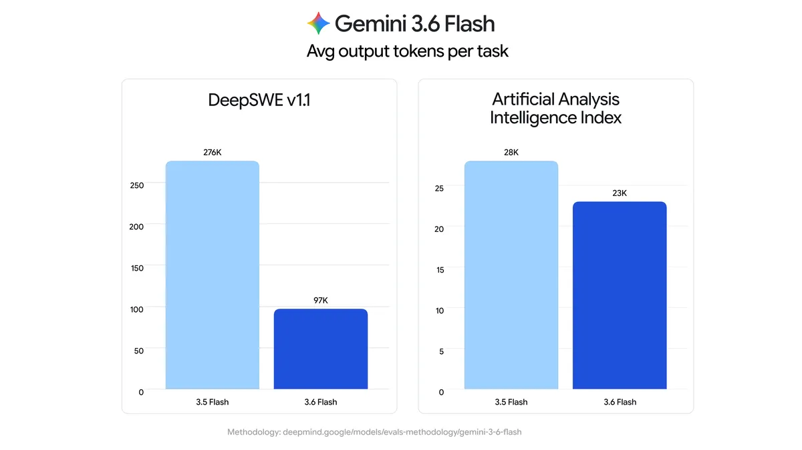
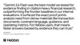
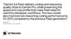
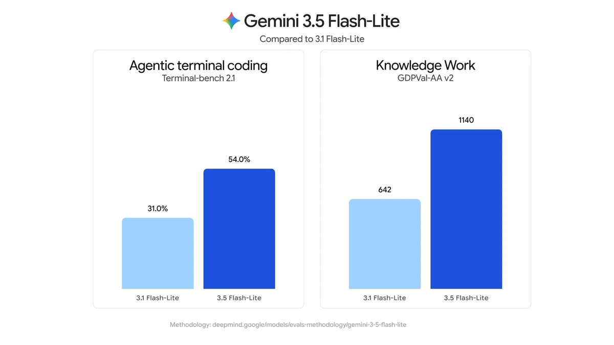
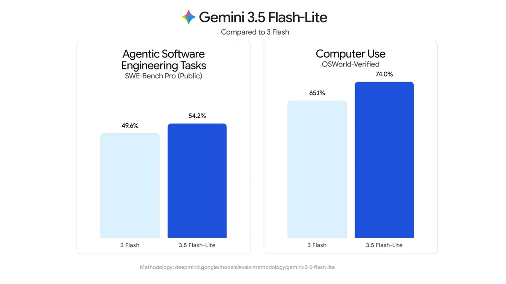
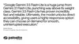
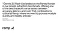
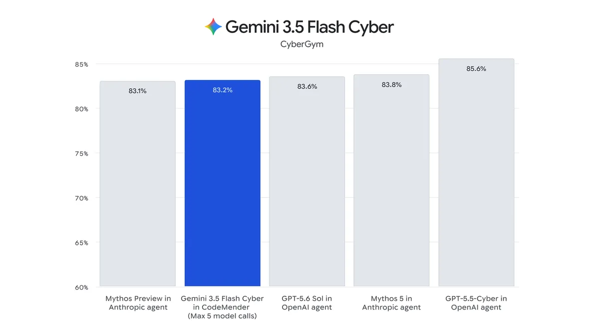

Introducing Gemini 3.6 Flash, 3.5 Flash-Lite, and 3.5 Flash Cyber
Jul 21, 2026
|Our newest Gemini models deliver the efficiency, latency, and reliability to build AI agents at scale.

Developers and customers building production AI agents need higher token efficiency, lower latency, and more reliable performance. Our Flash series of models is built to meet the sweet spot of efficiency and quality to enable scaling agentic workflows. Building on Gemini 3.5 Flash, we’re introducing new Gemini models:
- 3.6 Flash: Our workhorse model that delivers better coding, knowledge work, and multimodal performance. According to the Artificial Analysis Index, it reduces output token usage by 17% compared to 3.5 Flash, and in some benchmarks like DeepSWE by Datacurve, we observe up to 65%, all at a lower cost per output token.
- 3.5 Flash-Lite: Our fastest, most cost-effective 3.5-class model, delivering 350 output tokens per second according to the Artificial Analysis Index, also significantly outperforming prior Flash-Lite generations in agentic workflows.
- 3.5 Flash Cyber in CodeMender: Successful cybersecurity applications require careful orchestration of a model alongside an agent infrastructure. We’re introducing a combination of a new, highly efficient, specialized cyber-focused model paired with our CodeMender code security agent that delivers competitive performance at the frontier.
Beyond today’s releases, Gemini 3.5 Pro is currently testing with partners and we plan to make it broadly available as soon as it’s ready. In parallel, our team is already focusing on building the next generation of models. We have started our most ambitious pre-training run yet, for Gemini 4, and are excited by the progress.
3.6 Flash: More efficient and better quality than 3.5 Flash
Gemini 3.6 Flash builds directly on developer and customer feedback from 3.5 Flash. 3.6 Flash not only delivers a step up in coding and knowledge work, but it does this while meaningfully improving token efficiency. For example, on the Artificial Analysis Index, we see 3.6 Flash consuming 17% fewer output tokens than 3.5 Flash. It also takes fewer reasoning steps and tool calls to accomplish multi-step workflows.
This enhanced efficiency is also combined with a lower price than 3.5 Flash. At $1.50/1M input tokens and $7.50/1M output tokens, 3.6 Flash reduces the overall cost per agentic task, making agents more cost-effective to build and run.
3.6 Flash shows better token efficiency and reduced verbosity than 3.5 Flash in an OSWorld verified task (API)
Even while being more efficient, 3.6 Flash sees performance gains compared to 3.5 Flash across use cases:
- 3.6 Flash delivers higher precision with fewer unwanted code edits and reduced execution loops, as seen in DeepSWE (49% vs. 37%), and shows significant improvement in ML Research, as seen in MLE Bench (63.9% vs. 49.7%).
- It has improved computer use capabilities as seen in OSWorld-Verified (83.0% vs. 78.4%). Computer use is now a built-in client side tool via the Gemini API and Gemini Enterprise.
- It outperforms 3.5 Flash in knowledge work, as shown by benchmarks like GDPval-AA v2 (1421 vs. 1349). Customers like Hebbia and Harvey have found it particularly capable at multimodal tasks like document parsing, chart and data analysis, and report drafting.
3.6 Flash, using Managed Agents on AIS, can help parse through and analyze financial data and transcripts more efficiently and accurately than 3.5 Flash (AIS)
3.6 Flash executes code migrations, using multi-agent orchestration on AGY, with lower latency and higher quality than 3.5 Flash (AGY)
3.6 Flash helps develop a photographic texture extractor for 3D workflows, using canvas (Gemini App)
3.6 Flash uses AGY and the tldraw offline editor to build interactive theme studios with its strong visual understanding skills (AGY).


Customers report 3.6 Flash is a step forward in both cost and quality, balancing token efficiency, accuracy, and speed across complex workflows and knowledge-based tasks:


Built with safety
3.6 Flash is shipping with enhanced Frontier Safety safeguards in the domains of Chemical, Biological, Radiological, and Nuclear (CBRN) and cyber offense misuses. These safeguards make the model substantially more resistant to jailbreaks. At the same time, the model has been trained to minimize refusals for beneficial uses.
For more information, see the 3.6 Flash model card.
3.5 Flash-Lite: Built to scale agentic workflows
Beyond Flash, we’re also releasing Gemini 3.5 Flash-Lite, designed for both low-latency tasks and tasks where high throughput is critical for developers workflows, like agentic search and document processing.
3.5 Flash-Lite is the fastest model in the 3.5 series. As measured by Artificial Analysis, it runs at 350 output tokens/s. Priced at $0.3/1M input tokens and $2.5/1M output tokens and with significantly better quality than 3.1 Flash-Lite, 3.5 Flash-Lite offers a strong price-to-performance ratio for developers and customers running high throughput production traffic.
3.5 Flash-Lite executes high volume tasks at a lower latency than 3.5 Flash.
3.5 Flash-Lite enables efficient scaling for agentic systems. Across thinking levels, the model significantly outperforms 3.1 Flash-Lite. Depending on the workload, developers can configure the model to prioritize low-latency, low-cost execution for high-volume tasks with the minimal and low thinking levels, or engage higher thinking levels to process multi-step subagent workloads. The model now also has computer use as a built-in tool to reliably support these agentic tasks across surfaces.
It’s a significant step up in coding and agentic tasks as seen in Terminal-Bench 2.1 (54% vs 31%), long context as seen in GDM-MRCR v2 (72.2% vs. 60.1%), and real-world task execution as seen in GDPval-AA v2 (1140 vs. 642).

In fact, on many agentic and coding evals, 3.5 Flash-Lite even outperforms 3 Flash, including on SWE-Bench Pro (54.2% vs. 49.6%) and OSWorld-Verified (74.0% vs. 65.1%), making it a faster & more capable option for workloads on both 2.5 and 3 Flash.

3.5 Flash-Lite extracts product features from a massive e-commerce dataset and synthesizes it.
Working alongside 3.6 Flash as the master agent, 3.5 Flash-Lite instantly generates 25 unique, ready-to-explore web design concepts.
3.5 Flash-Lite can scale receipt translation and summarization with its multimodal understanding.
3.5 Flash-Lite builds a game by instantly generating and iterating through multiple options.
Early customers of 3.5 Flash-Lite are highlighting its unique combination of speed, intelligence, and cost efficiency for scaling agentic workflows and data processing tasks:


For more information about the model, see the 3.5 Flash-Lite model card.
3.5 Flash Cyber in CodeMender: finding and fixing vulnerabilities efficiently
AI models have become capable of finding security vulnerabilities faster than current systems can fix them. Tackling this growing threat requires an approach to securing software that is highly capable and efficient.
Flash’s performance and efficiency makes it an ideal foundation to detect, validate, and patch code security issues at scale. Gemini 3.5 Flash Cyber is built on top of 3.5 Flash, and fine-tuned for finding and fixing cybersecurity vulnerabilities at a lower price per token than larger models.
Within CodeMender, which uses multiple 3.5 Flash Cyber agents working together to produce a single combined report, 3.5 Flash Cyber reaches competitive performance at the frontier on the popular benchmark CyberGym.

Given the dual-use nature of this technology, we have taken an intentional approach to deploying 3.5 Flash Cyber. The model will be exclusively available to governments and trusted partners via CodeMender soon as part of a limited-access pilot program. This will give frontline defenders a head start in finding and fixing critical vulnerabilities before they can be exploited, while mitigating against broader misuse.
3.6 Flash and 3.5 Flash-Lite: Get started today
3.6 Flash and 3.5 Flash-Lite are available starting today:
- For developers in the Gemini API via Google AI Studio and Android Studio. 3.6 Flash is also available in Google Antigravity. Get started with the Developer Guide.
- For enterprises in Gemini Enterprise Agent Platform. 3.6 Flash is also available in the Gemini Enterprise app.
- For everyone via the Gemini app. 3.5 Flash-Lite is also rolling out in Google Search.
As you start building with 3.6 Flash and 3.5 Flash-Lite, we welcome your feedback to improve future Gemini models and look forward to releasing 3.5 Pro soon.
Get the latest news from Google in your inbox
Sign up for our newsletters with product updates, event information, special offers, and more.
Done. Just one step more.
Check your inbox to confirm your subscription.
You can also subscribe with a .
Your information will be used in accordance with Google's privacy policy. You may opt out at any time.